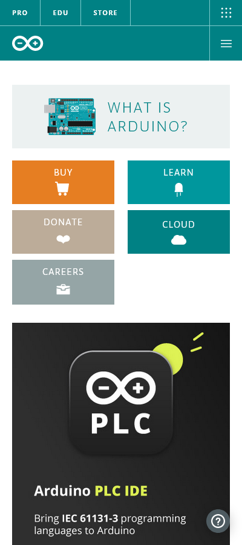
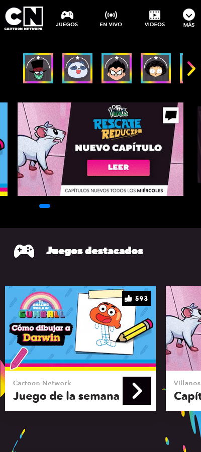

White Spaces & Design
Paypal
www.paypal.comThis website has a simple design with a proper amount of blank areas between each element. The padding inside the buttons and margins between elements helps understand their relationship and focus on the visual hierarchy of the headings and the contrast of colors.
Alignment
Arduino
www.arduino.cc On this website, we can visually notice a vertical and horizontal alignment on the elements of the header and main attributes. Some of the icons on the body have an optical alignment relative to their texts and boxes to appear more balanced.
Contrast
Cartoon Network
cartoonnetwork.com.ar Contrast is highlighted on this website with a predominantly black background and bright colors on the borders and images. The use of black and white on icons and texts makes a classical contrast that allows the user to lead the attention to the visual hierarchy of the logo, characters and images.